羊毛硫抗生素的免疫调节作用
原文：https://mp.weixin.qq.com/s?__biz=MzAwMzIzOTk5OQ==&mid=2247499606&idx=2&sn=96b10c7b585907ced9850a9cd67a4e82&chksm=9b3c8606ac4b0f10a7f7aa07dc1cb2fdb42651b1cb93503b963ec76a28f737277ffd5a096e98#rd 合集：文献速递
Biomamba荐语
今天分享的是一篇于2022年发表在 《Adv Sci (Weinh)》 的文献，影响因子为17.5，题目是 Tonsillar Microbiome-Derived Lantibiotics Induce Structural Changes of IL-6 and IL-21 Receptors and Modulate Host Immunity。作者来自北京大学人民医院风湿免疫科和风湿病机理与免疫诊断北京市重点实验室（BZ0135）。本文中，该团队通过挖掘扁桃体微生物宏基因组学数据和抗菌肽数据库发现类风湿关节炎患者扁桃体微生物群中缺乏羊毛硫抗生素；展示了唾液素的免疫调节作用并确定了介导这一过程的关键受体IL-6和IL-21；最终通过RA小鼠模型验证了唾液素对实验性关节炎的预防和治疗作用。这项研究提供了微生物多肽介导的免疫调节的机制联系，有助于其在自身免疫性疾病的临床应用研究。
doi:
10.1002/advs.202202706
链接：
https://doi.org/10.1002/advs.202202706
背景介绍
-
1.微生物与免疫的发展密不可分；微生物对于一些与免疫有关的疾病有关，例如自身免疫疾病（egRA）;
-
2.用无菌小鼠或者抗生素处理小鼠无法构建内风湿性关节炎（RA），说明微生物在RA的发生发展中是必不可少的;
-
3.微生物大分子和小分子代谢物是宿主免疫和微生物组之间的额外通讯层。对于一些小分子代谢物如短链脂肪酸和胆汁酸已经被证明可以通过调节Treg和Th17细胞来调节免疫，但大分子代谢物，如微生物肽等对免疫的机制见解很少；
-
补充知识点：微生物肽，就是来源于微生物的肽。
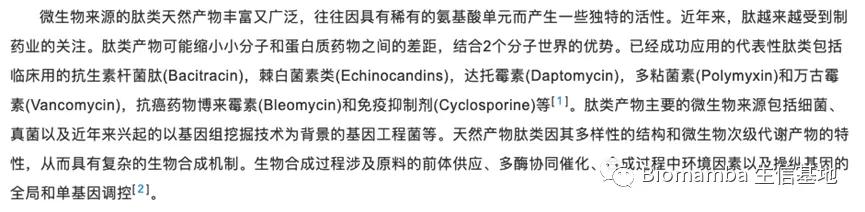
-
- 此前，通过分析扁桃体微生物组的代谢潜力，我们发现 RA 扁桃体缺乏羊毛硫抗生素的生物合成和运输。
-
5.羊毛硫抗生素是含有羊毛硫氨酸和/或β-甲基羊毛硫氨酸残基的多环抗菌肽，由包括链球菌和乳酸杆菌在内的细菌产生。
-
6.羊毛硫抗生素能够在临床抑制病原体和发挥免疫调节的作用。
摘要
-
1.本文就是要研究微生物大分子代谢物（这里指羊毛硫抗生素唾液素）对自身免疫疾病的具体影响机制；
-
2.作者利用扁桃体微生物宏基因组学数据结合抗菌肽数据库分析发现唾液素与免疫细胞具有相关性；
-
3.唾液素能够抑制辅助性T细胞分化和IL-21产生；
-
4.唾液素能够直接与IL-6和IL-21受体结合并改变IL-6和IL-21受体的构象；
-
5.给予RA动物模型唾液素，发现唾液素能够起到预防和治疗的作用。
结果
- Fig1 结果：
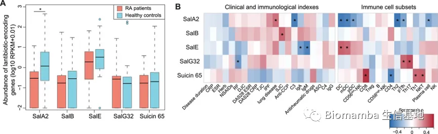
-
1.用临床健康和RA患者扁桃体微生物进行宏基因组测序，利用宏基因组数据结合抗菌肽数据库（APD3）发现了5种羊毛硫抗生素唾液素：Sal A2，Sal B, Sal E, Sal G32, Sal 65。并且发现RA病人中的SalA2显著下调；
-
2.并用5种唾液素与免疫细胞相关性分析，显著下调的SalA2与与DC、Tfh和Th17等细胞呈显著负相关；
-
Fig2 结果：
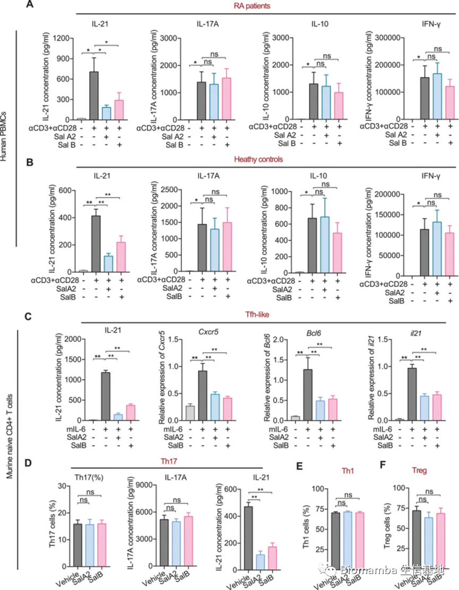
分别用临床人的PBMC和来自B6小鼠的Naïve CD4 T细胞进行体外细胞实验，用化学合成的唾液素A2和B分别给予这2种细胞：
- 1. 为了支持对唾液素潜在免疫调节作用的研究，对从 RA 患者和健康个体中分离的外周血单个核细胞 (PBMC) 进行了体外实验。用 αCD3 和 αCD28 抗体刺激培养的人 PBMC 的处理表明，唾液酸 A2 或 B 肽可以显着降低免疫调节细胞因子白细胞介素 21 (IL-21) 的水平，并且两种肽的 IL-21 降低作用都是剂量- 依赖。
IL-21 主要由Tfh和Th17细胞产生。
-
2. 试图确定唾液素 A2 和 B 直接靶向哪些细胞亚群，用B6小鼠的Naïve CD4 T细胞分别在Tfh样（(𝛼IFN-𝛾+𝛼IL-4+𝛼IL-2+IL-6)或Th17(𝛼IFN-𝛾+𝛼IL-4+IL-6+TGF-𝛽+IL-23)极化条件下培养，并看含或不含唾液素的情况下的Tfh和Th17b相关基因的变化。可以看到Tfh细胞的编码基因在含唾液素条件下均显著降低且呈剂量依赖性。Th17计划条件下，Th17中IL-21显著降低，IL-17A水平不影响，因此说明唾液素可能选择性抑制IL-6信号转导，但不会显著影响Th17条件下特异性的TGF-b和IL-23的信号传导途径。另外对照实验表明不影响Th1和Treg细胞分化。
-
补充知识（下图）：
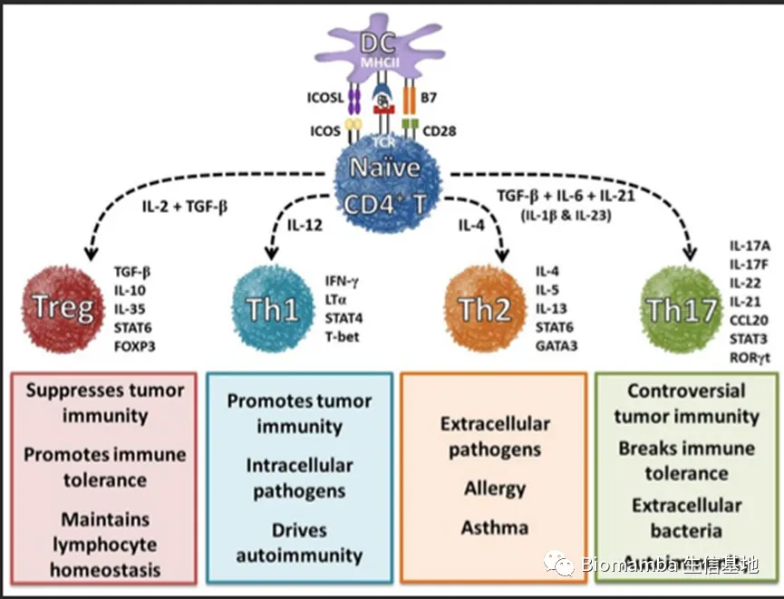
- Fig3 结果：
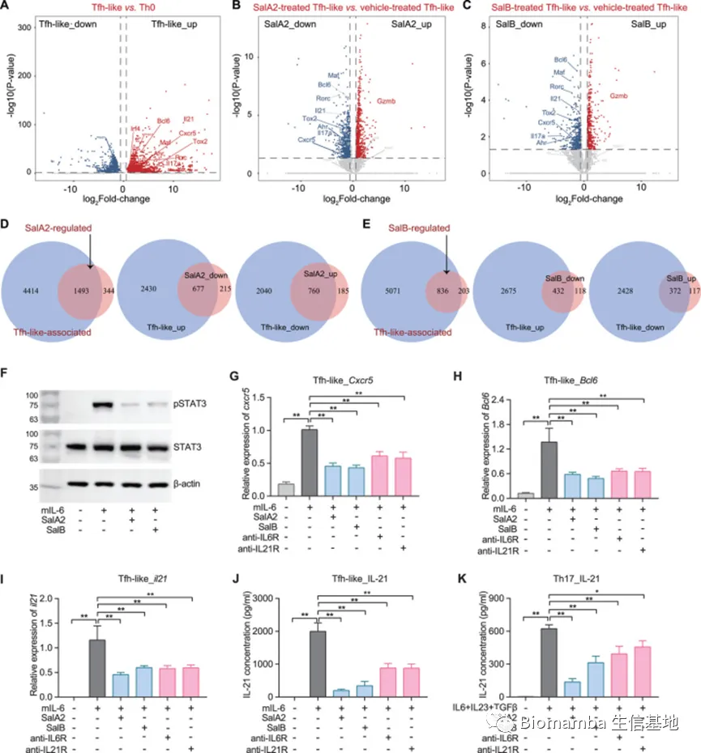
-
1.用上面的来自于B6小鼠的CD4T细胞Th0,Tfh,已经用唾液素处理的Tfh细胞进行RNAseq，发现两种唾液素处理下的Tfh基因表达下调，并且韦恩图显示Tfh与唾液素呈负相关的重叠基因占比96%，证明唾液素对Tfh具有负调控;
-
2. 然后我们测试了信号转导和转录激活因子 3 (STAT3) 的激活，它是 IL-6 和/或 IL-21 信号传导下游的关键分子，也是促进小鼠 Tfh 分化的最重要的信号转导。唾液酸 A2 和 B 在很大程度上阻断了 Tfh 样细胞中 IL-6 介导的 STAT3 磷酸化。
-
知识补充：
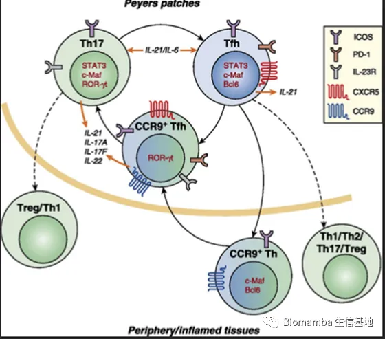
-
3.用抗IL-6和IL-21抗体与唾液素比较发现，唾液素表现出与抗IL-6和抗IL-21抗体一样的功效，甚至更好。
-
4.总：唾液素抑制IL-6R/IL-21R-STAT3 信号通路，从而合理化观察到的唾液素对 Tfh 细胞分化和 IL-21 产生的影响。
-
Fig4 结果：
鉴于唾液素在 IL-6R/IL-21R 信号传导中的调节能力，我们使用无细胞试验来测试唾液素 A2 和 B 是否可能与 IL-6R 和/或 IL-21R 相互作用。
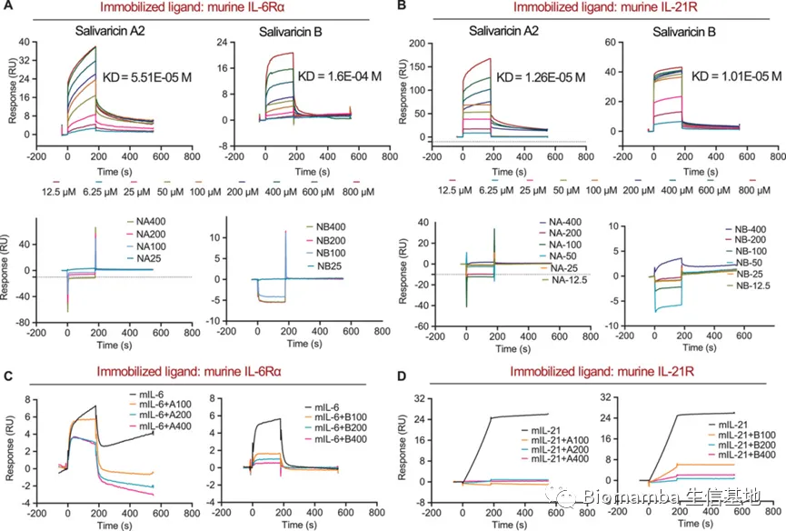
-
- 使用表面等离子共振(SPR) 对唾液素与鼠 IL-6Rα 的直接结合进行了额外验证，结果表明唾液素-IL-6Rα 相互作用是浓度依赖性的。A2 也与鼠 IL-21R 相互作用。
-
2. 尽管对各自受体具有较低的结合亲和力，但竞争性抑制实验表明，在唾液酸 A2 或 B 的存在下，IL-6 与 IL-6Rα 或 IL-21 与 IL-21R 的结合可以部分或完全被抑制且呈剂量依赖性。
-
总：这些结果表明唾液素可以抑制IL-6和IL-21与其受体之间的相互作用，从而抑制IL-6R/IL-21R信号传导。
-
Fig5 结果：
接下来，我们着手确定唾液素中介导与 IL-6R 和/或 IL-21R 结合的关键氨基酸位点。
首先是预测出几个关键氨基酸位点，其次构建了5个突变体（第2个精氨酸残基处，第12，13个天冬氨酸残基处，第21，22个半胱氨酸残基）
A2 不突变
A2-1在第 2 个精氨酸残基处突变
A2-2第 12 和 13 个天冬酰胺残基突变
A2-3第 21 和 22 个半胱氨酸残基突变
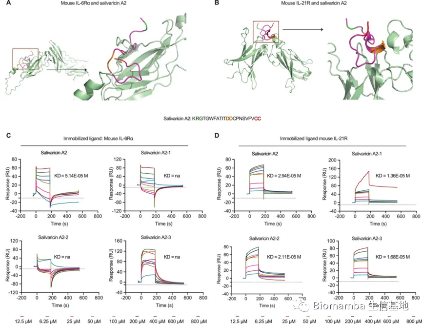
-
1.A2-1，A2-2，A2-3与IL-6R的结合亲和力受损；但与 IL-21R 的结合亲和力相似（与未突变的比亲和力没有太显著下降），另外突变前后A2的二级结构相似，说明这些位点对唾液素 A2 的构象并不重要但这些位点的突变与IL-6R相关。
-
2.唾液素B的突变对IL-6R和IL-21R都没有影响。
-
Fig6 结果：
由于唾液素对各自受体的结合亲和力要低得多，因此我们假设这些肽不直接竞争与 IL-6 或 IL-21 的结合，而是诱导受体功能的变化。
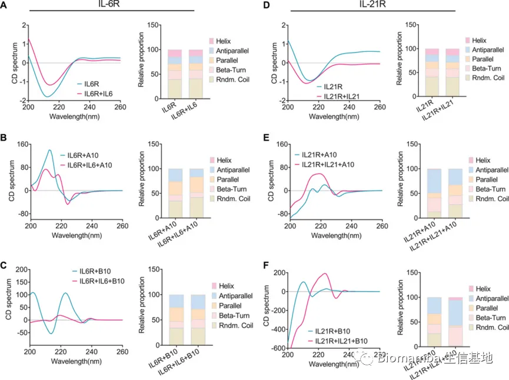
鉴于受体结构对配体-受体接合至关重要，我们通过使用圆二色 (CD) 光谱检测了在唾液素存在下 IL-6Rα 和 IL-21R 的二级结构。
-
1. IL-6Rα 或IL-21R 的 CD 光谱和不同二级结构（例如，α-螺旋、β-桶和无规卷曲）的统计比例在给予IL-6 或 IL-21 之后保持不变结合（A，D）;
-
2. 相比之下，唾液素以剂量依赖性方式显着改变了 IL-6Rα 和 IL-21R 结构（图 6B、C、E、F）
-
总：说明唾液素以与IL-6R和IL-21R直接结合且改变其构象的方式阻止IL-6，IL-21与IL-6R，IL21R结合。
-
Fig7 结果：
我们进一步用胶原诱导的关节炎 (CIA) 模型小鼠检验唾液素是否具有抑制免疫及其介导的病理作用。
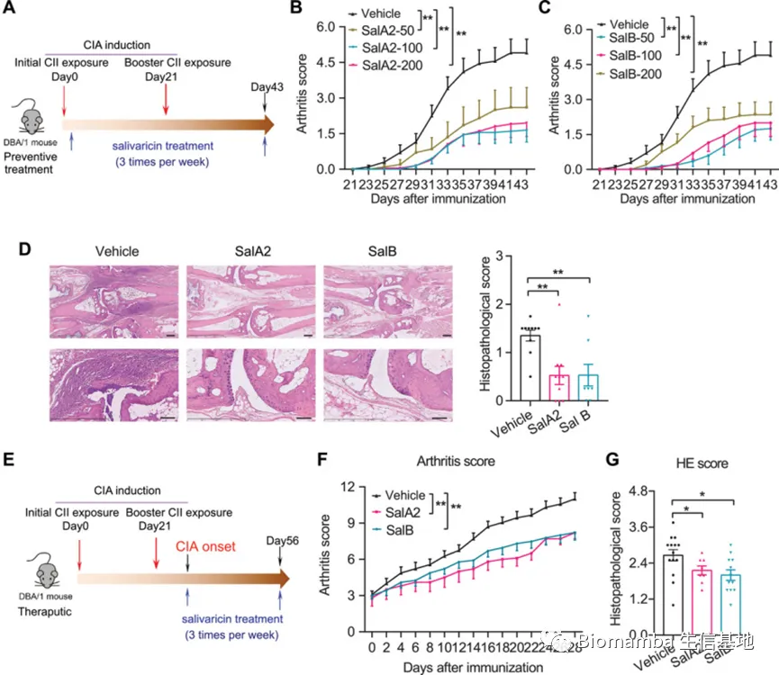
分预防性和治疗性2种给药方案：
-
1.不管是预防性还是治疗性的，唾液素都能显著降低关节炎，且呈剂量依赖性。
-
Fig8 结果：
我们在预防方案实验结束时分析动物引流淋巴结 (DLN) 和脾脏中的血清细胞因子水平和淋巴细胞亚群来探索哪些免疫效应分子可能有助于观察到唾液素的抗关节炎功效。
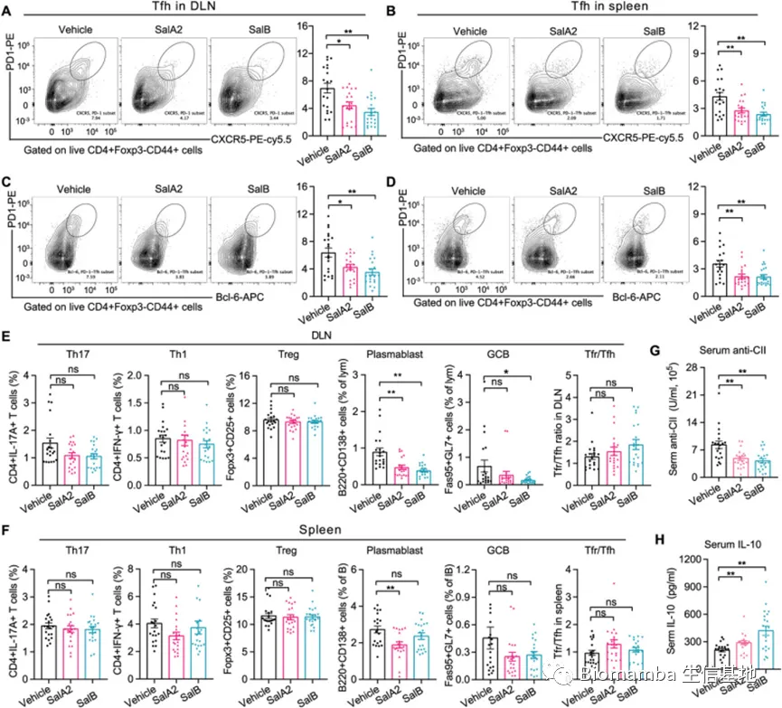
-
1. 唾液素显着降低了DLNs 和脾脏中 Tfh 细胞的比例（CXCR5）（A B）；
-
2. 检测到表达Tfh 极化转录因子 Bcl6 的 Tfh 细胞显着减少(C D)；
-
- Th17、浆母细胞和 GCB 细胞的频率在唾液素处理的小鼠中也呈下降趋势，而 Th1 和 Treg 细胞的比例保持不变(E F)；
-
4. 唾液素处理的小鼠血清自身抗体抗 II 型胶原 (CII) 的滴度显着降低，血清 IL-10 水平显着升高（G H）
-
本篇文章以某一微生物大分子代谢物羊毛硫抗生素唾液素为中心，从宏基因数据分析开始逐步揭开唾液素与免疫直接的具体关系，研究思路值得借鉴。
如果大家在学习过程中遇到好文想要分享的，也欢迎联系我投稿。
往期回顾
Biomamba助推的第二篇文章!发表了！Biomamba生信基地助推的第三篇文章!见刊! 又来了！Biomamba生信基地助推的第四篇文章! 文献阅读（一）、人类肠道微生物的代谢网络与疾病 文献阅读（二）、肥胖与减肥干预状态下的肠道微生物组及血清代谢物变化文献阅读（三）、单细胞测序解析糖尿病肾病中肾小球的动态变化文献阅读（四）、单细胞测序技术解析健康人与T2D患者的胰岛差异文献阅读（五）、只有5页的文章（IF=7.307）文献阅读（六）、小鼠全肾单细胞测序开篇之作 文献阅读（七）、一篇不花钱就能白嫖的文章文献阅读（八）、不会吧不会吧，Nature都能白嫖？文献阅读（九）、一文了解GSVA原理 文献阅读（十）、DKD 这一篇就够了文献阅读（十一）、高氧下小鼠肺发育损伤的ScRNA图谱 文献阅读（十二）、IgAN & STRT-Seq 文献阅读（十三）、老树开新花——EGFR、肿瘤、免疫+scRNA-Seq 文献阅读（十四）、肿瘤科医师狂喜,15分RNA修饰数据挖掘 文献阅读（十五）、癌前基质细胞驱动BRCA1肿瘤发生 文献阅读（十六）、肠道微生物群&肾衰竭文献阅读（十七）、肠道菌群&代谢物&脂肪肝癌变文献阅读（十八）、紧跟生信"钱"沿,胰腺癌&免疫多模态图谱 文献阅读（十九）、原发头颈癌和肿瘤转移微生态 文献阅读（二十）、成年T1D患者肠道微生物与宿主血糖 文献阅读（二十一）、肾脏疾病&代谢&核受体ESRRA 文献阅读（二十二）、PD-1&急性髓细胞性白血病&T Cell 文献阅读（二十三）、鼻咽癌&肿瘤微环境&scRNA-Seq 文献阅读 (二十四)、《Nature》：MYB调控衰竭性T细胞对检查点抑制的响应 文献阅读（二十五）、又是肠道！雄激素诱导的肠道菌群失调&多囊卵巢综合征 文献阅读（二十六）、30分文章深度解析IBD中微生物-宿主互作

如何联系我们
 公众号后台消息更新不及时，超过48h便不允许回复读者消息，这里给大家留一下领取资料、免费服务(有root权限的共享服务器,你没有体验过的全新版本!)的微信号 ，方便各位随时交流、提建议(科研任务繁重，回复不及时请见谅)。此外呼声一直很高的交流群 也建好了，欢迎大家入群讨论：永久免费的千人生信、科研交流群
公众号后台消息更新不及时，超过48h便不允许回复读者消息，这里给大家留一下领取资料、免费服务(有root权限的共享服务器,你没有体验过的全新版本!)的微信号 ，方便各位随时交流、提建议(科研任务繁重，回复不及时请见谅)。此外呼声一直很高的交流群 也建好了，欢迎大家入群讨论：永久免费的千人生信、科研交流群
大家可以阅读完这几篇之后添加给生信入门初学者的小贴士 如何搜索公众号过往发布内容

 您点的每个赞和在看，我都认真当成了喜欢
您点的每个赞和在看，我都认真当成了喜欢